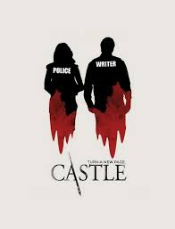

Richard Castle é um bem sucedido escritor de mistério e assassinato, que acabou de matar o seu personagem principal. No entanto, parece que um de seus fãs gostou de seus livros um pouco demais quando um assassino copiador começa a matar pessoas ao redor, como descrito nos livros de Castle. Depois de ter sido interrogado pela polícia, ele junta forças com a detetive Kate para resolver este caso. Os dois se tornam parceiros e começam a trabalhar juntos para resolver outros assassinatos em NY, juntamente com outros detetives Tony, Kevin e Capitão. Eles também trabalham com a médica-legista Lanie.
Beckett : Ah, então nós somos Brangelina agora? Castelo : Não, não, não. Nós somos... Rickate? Não, nós somos... Kate-ick? Caixão. Oh, isso é bom, por causa da coisa toda do assassinato, Caskett. — Castle e Beckett apelidando seu relacionamento..
A relação Castle-Beckett é o flerte/amizade, e mais tarde o relacionamento romântico entre Richard "Rick" Castle e Katherine "Kate" Beckett . O nome do casal é referido pela própria dupla ( Murder, He Wrote ), e mais comumente referido pelos shippers como Caskett
Essa e a Serie da Minha Vida Que o Castle Consegui-o Ficar Com a Ruiva Eu Não Fiquei Com A Minha Por Isso amo essa serie
Eu Amo Por Iso Assisto e Lembro